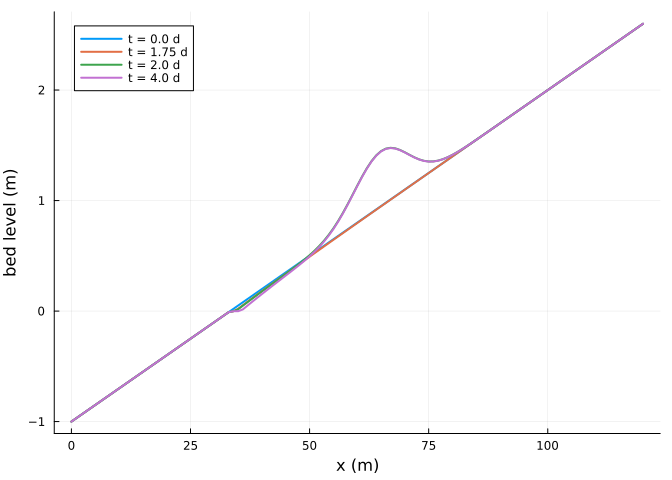
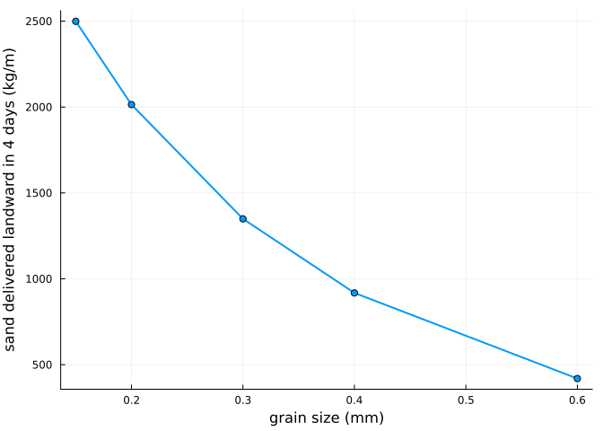

Callbacks and ensembles
Simon Frost
Overview
An AeolisProblem follows the SciML interface, so the tools for differential equations work with it: callbacks change the state or stop the run during a simulation, tstops make the model step to given times, remake changes parameters, and EnsembleProblem runs many variants, in parallel if threads are available. This vignette models a beach nourishment, a storm that ends a run, and a sweep over grain sizes.
ENV["GKSwstype"] = "100"
using Aeolis
using Plots
using Statisticsx = collect(0.0:1.0:120.0)
zb = @. -1.0 + 0.03 * x
day = 86400.0
p = AeolisParameters(; xgrid_file=x, bed_file=zb, grain_size=0.0003,
wind_file=[0.0 11.0 270.0; 30day 11.0 270.0],
tide_file=[0.0 0.0; 30day 0.0], process_tide=true, dt=3600.0,
tstop=4day, output_times=day / 4, output_vars=[:zb, :qs, :mass])
prob = AeolisProblem(p)AeolisProblem with tspan (0.0, 345600.0)
AeolisParameters
time: 0.0 to 345600.0 s, dt = 3600.0 s
scheme: euler_backward, solver: trunk
fractions: 1, layers: 3
enabled: process_wind, process_transport, process_bedupdate, process_threshold, th_grainsize, process_tideA nourishment
A DiscreteCallback takes a condition and an effect. Here, after two days, sand is placed on the upper beach, raising the bed level by up to 0.5 m around x = 65 m (the bed composition of the top layers is unchanged, so the new sand has the original grain size). tstops makes the model step to exactly two days.
function nourish!(integ)
rise = @. 0.5 * exp(-((x - 65) / 8)^2)
integ[:zb] = integ[:zb] .+ rise
end
nourishment = DiscreteCallback((u, t, integ) -> t == 2day, nourish!)
sol = solve(prob; callback=nourishment, tstops=[2day])
zbt = transect(sol, :zb)
plot(x, zbt[:, [1, 8, 9, end]]; lw=2, xlabel="x (m)", ylabel="bed level (m)",
label=permutedims(["t = $(t / day) d" for t in sol.t[[1, 8, 9, end]]]))
A storm that ends the run
A callback can stop the simulation with terminate!. Here a wind series has a storm on the third day; the run ends when the flux at the landward end exceeds a limit.
t = 0.0:3600.0:(10day)
wind = hcat(t, [ti < 2.5day ? 9.0 : 16.0 for ti in t], fill(270.0, length(t)))
storm = remake(prob; wind_file=wind)
limit = DiscreteCallback((u, t, integ) -> integ[:qs][end - 1, 2, 1] > 0.02,
integ -> terminate!(integ))
ssol = solve(storm; callback=limit)
integ = init(storm; callback=limit)
solve!(integ)
(retcode=integ.retcode, stopped_at_hours=integ.t / 3600)(retcode = SciMLBase.ReturnCode.Terminated, stopped_at_hours = 61.0)A sweep over grain sizes
EnsembleProblem runs trajectories made by prob_func, which receives the problem and a context with the trajectory number; EnsembleThreads runs them on the available threads.
sizes = [0.00015, 0.0002, 0.0003, 0.0004, 0.0006]
eprob = EnsembleProblem(prob; prob_func=(pr, ctx) -> remake(pr; grain_size=sizes[ctx.sim_id]))
esol = solve(eprob, EulerBackward(), Aeolis.SciMLBase.EnsembleThreads();
trajectories=length(sizes))
supply = [sum(transect(s, :qs)[end - 1, 1, 2:end]) * day / 4 for s in esol.u]
plot(1000 .* sizes, supply; lw=2, marker=:circle, xlabel="grain size (mm)",
ylabel="sand delivered landward in 4 days (kg/m)", label="")
Finer sand has a lower threshold and is transported more; the coarsest fraction barely moves at this wind speed.